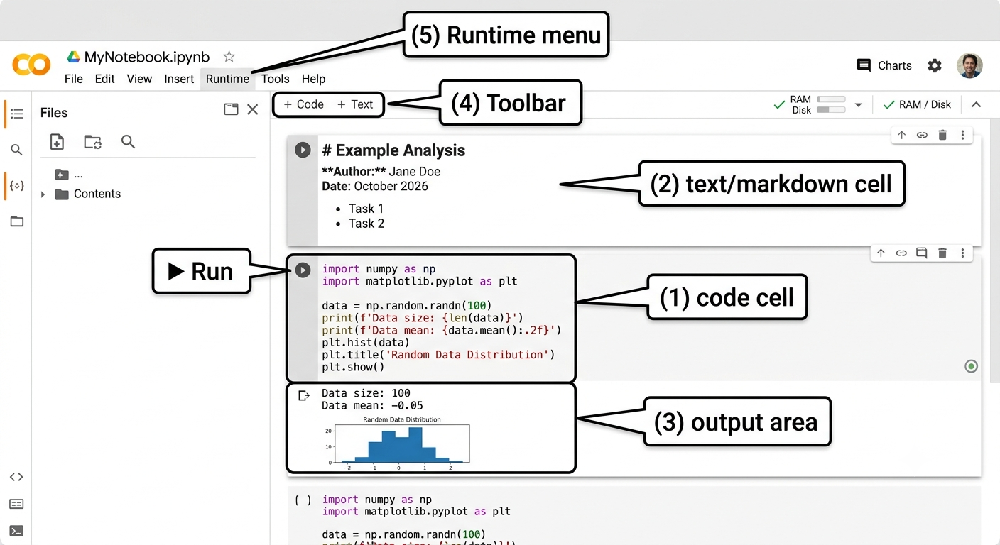
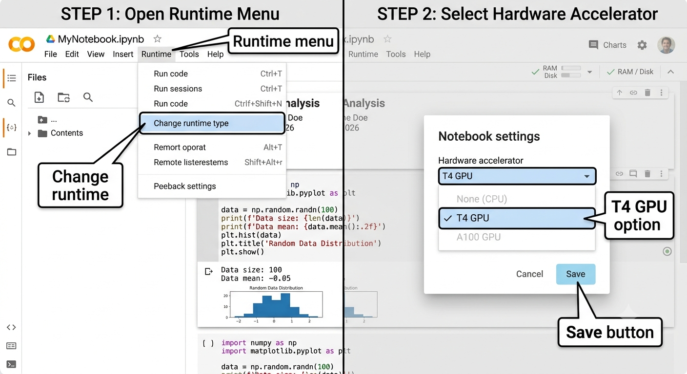

Introduction
Module 0: Course Intro, Python & NumPy Foundations
Session 1 · Aug 31 · Welcome to Acceleration
Today’s Plan
- What GPU acceleration actually means, and why it’s suddenly everywhere
- The question this whole course is built to answer
- A live tour of Google Colab — where every line of code you write this semester will run
Why This Course, Why Now
- Every app you used this morning likely touched a GPU somewhere: the phone camera’s portrait mode, a voice assistant, a recommendation feed, a video call’s background blur
- Large AI models (the kind behind ChatGPT, image generators, etc.) are trained and run almost entirely on GPUs — not CPUs
- Five years ago, “GPU programming” was a niche graphics/gaming skill. Today it’s one of the most in-demand skills in computing, from finance to genomics to robotics
- This course teaches you to think and program in the style that makes GPUs fast — not just to call a library
The Question This Course Answers
You are given a problem and a chip with thousands of tiny processors. How do you split the problem into thousands of pieces that can all run at the same time, and keep those processors from sitting idle?
- Every module this semester answers one piece of this question
- By the end, you’ll write code that runs on real GPU hardware — not simulate it, not read about it, actually run it
One Cashier vs. Twenty Lanes

- The single expert cashier is faster per customer — but the line is long
- Twenty ordinary cashiers are each slower per customer — but together they clear the crowd faster
- This is the entire CPU-vs-GPU design philosophy in one picture — Module 1 gives you the real numbers behind it
From Graphics Card to Compute Engine
- GPUs were originally built for one job: color millions of screen pixels, many times per second, for video games
- Coloring a pixel is simple arithmetic, and every pixel’s color is independent of its neighbors — the same simple job, repeated millions of times, with no coordination needed
- Around 2007, NVIDIA released tools (CUDA) letting programmers repurpose that pixel-coloring hardware for any problem shaped like “the same simple job, repeated millions of times” — not just pixels
- Scientific simulation, finance, and eventually AI all turned out to be full of exactly that shape of problem
Meet Google Colab
- Colab is a free, browser-based notebook environment — no install, no setup on your own laptop
- Every notebook runs on a machine in Google’s data center, and that machine can include a real GPU
- You write code in cells; Colab runs each cell and shows the output immediately below it
- Every lab, checkpoint, midterm, and final in this course happens inside a Colab notebook — get comfortable here early
Colab Anatomy

- Cells run top to bottom, but you can re-run any single cell out of order — this will bite you if you’re not careful (a variable from a deleted cell can still “exist” until you restart)
- “Runtime → Restart runtime” clears everything and starts fresh — your escape hatch when things get weird
Selecting a GPU Runtime

- By default, a new Colab notebook runs on a CPU-only machine — you must explicitly request a GPU
- Free-tier Colab gives you an NVIDIA T4 GPU, with usage limits that reset periodically
- Changing runtime type disconnects and reconnects your notebook — any variables you had are lost, so save your work first
The Weekly Rhythm
[DIAGRAM] — A simple repeating-cycle diagram: three boxes in a row labeled “Mon: Lecture,” “Wed: Lecture,” “Fri: Lab + Checkpoint,” connected by an arrow looping back from the third box to the first, labeled “next week.” A small badge on the “Fri” box reads “~20 min checkpoint at the end.”
- Monday and Wednesday: lecture (this room, this format)
- Friday: lab session — guided, hands-on, graded on completion, no time pressure
- The last ~20 minutes of most Friday labs: a checkpoint — timed, individually-seeded, auto-graded
- Roughly every three weeks, a lecture opens with a 15-minute Blackboard quiz covering the previous module
How You’re Graded, In Brief
| Component | Weight | Feel |
|---|---|---|
| Quizzes + Checkpoints | 30% | Short, frequent, low-stakes individually |
| Labs | 10% | Relaxed, graded on completion |
| Midterm + Final | 40% | Comprehensive, Lockdown Browser, in Colab |
| Capstone | 15% | Team project, second half of semester |
| Engaged Learning | 5% | Reflection posts, ~1% each |
- Full detail lives in the syllabus — this is the shape of the semester, not the fine print
- Notice: no take-home assignments. Everything individual happens in class, under time constraints
Engaged Learning: Beyond the Slides
- Five short reflection assignments (EL-01 through EL-05) spread across the semester, ~1% of your grade each
- Each pairs a short video or reading (10–30 min) with a ~250-word discussion board post
- They’re not busywork — EL-01 (3Blue1Brown, due Sep 13) will make Session 3’s dot-product material click before we even get there
- Graded on engagement and effort, not on getting a “correct” answer
This Week
- Today (Mon): you’re here
- Wed: Python for Java developers — bring your laptop, we’ll live-code
- Fri: Lab 1 in Colab — first notebook submission, plus Checkpoint CK-1 in the last 20 minutes
- Before Wednesday: make sure you can log into Colab and see a blank notebook — that’s the only prep needed
COSC435 · Module 1 · Intro